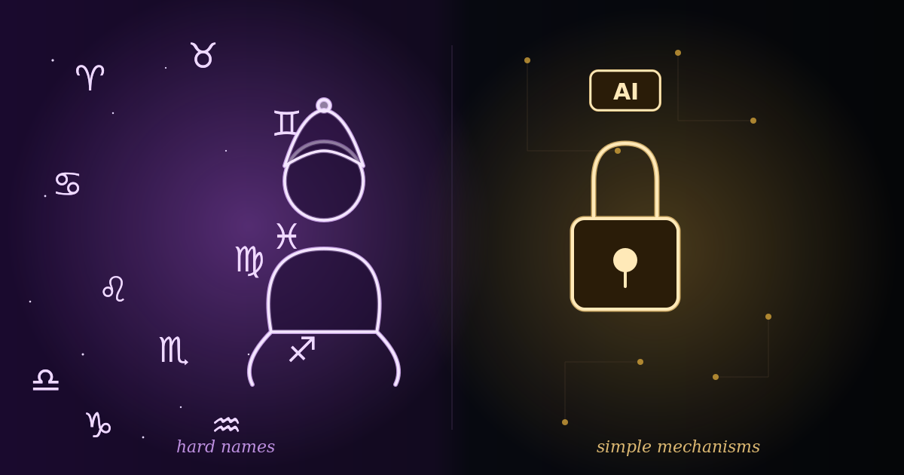

Differential privacy isn't astrology — it's a coin flipped the right way
Third chapter of the series: what data privacy's technical terms actually mean, without marketing spin or academic filler.
In the first two pieces of this series I made two arguments: that anonymization isn't a property of the data, it's a relationship between the data and whoever is reading it; and that three real-world fiascos — Netflix, the Massachusetts governor, the Twitter/X API — prove that "removing names and IDs" was never enough. At the end of the second piece I mentioned, in passing, two more robust ideas without properly explaining either: differential privacy and strict deterministic architecture. Today I'm paying that debt.
I'll admit that the first time I heard "differential privacy" I thought I'd wandered into a corporate astrology lecture — big name, vague promise, zero explanation of how it actually works. And that's a real editorial problem, not just mine: anyone who edits technical books knows every hard term you leave unexplained costs you a slice of your readers — the figure floating around is something like 10% per untranslated jump in complexity. So let's go straight to it: what these two names mean, without the incomprehensible-technical version and without the marketing version that promises the world.
"Differential privacy" means adding a bit of controlled mathematical noise to data, in a way that protects every individual row without ruining the count for the group as a whole. The simplest example I know doesn't use a single formula — it uses a coin. Imagine you ask 100 employees at a company, during an internal audit: "have you ever altered an accounting entry to make the balance sheet look better?" Asked directly, nobody confesses. Now have each of them flip a coin in private, without showing you the result: heads, answer truthfully; tails, flip again and answer "yes" for heads, "no" for tails. Nobody — not the auditor, not the boss, not me — will ever know whether a specific person's "yes" came from the truth or from the luck of the coin: the individual row is genuinely protected. But because you know the coin's exact probability (50%), you can calculate the real fraud rate across the whole group with precision. The aggregate statistic survives; the person isn't traceable. Companies like Apple and the US Census Bureau have used this idea — with math far more sophisticated than a coin, but the exact same principle — for years.
The second name, "strict deterministic architecture," I already explained without the label back in the first piece of this series: it's the "little spreadsheet with the key" — a simple, fixed, predictable script that swaps "Mario" for "Client_A71" the same way every time, running on my own computer, with the lookup table locked on a machine that never leaves my hands. Calling it "deterministic" just means the rule never changes; calling it "strict" just means it runs isolated, under the full control of whoever maintains it. Strip away the hard name and it's the same principle as a hotel safe: the key never leaves the room.
I was tempted to swap these two names for more "sellable" versions. I saw a suggestion to call this a "Local Identity Vault" or "Shielded Analytics" — terms that sound more comfortable to whoever is hiring you. I decided not to. Not because the technical names are pretty — they aren't —, but because this whole series is about technical honesty, and swapping a hard name for a pretty one without explaining the mechanism underneath is the exact same mistake as the "100% anonymized" claim I already criticized: hiding the real engineering behind a word that sounds good. I'd rather give you the ugly name and the clear explanation than the pretty name and the black box.
In the end, both concepts prove the same thing the fiascos in the previous chapter proved in reverse: data security isn't luck, and it isn't a line in a contract — it's an engineering choice. A coin flipped the right way. A key that never leaves the right machine. Neither promises 100%, as I've said before; they promise exactly what the math can deliver, no more, no less.
Disclosure: I'm a Brazilian forensic/court-appointed accountant (perito contábil), not a developer or a lawyer. This piece — and the series — records personal, experimental reflections, tested in practice rather than settled by statute or case law. It may contain errors, get revised, or simply be wrong in the next installment. It isn't professional or legal advice for your specific situation; it's an invitation to argue with a colleague thinking through the same problem in real time.
← Back to all articles
Comments
Comments are moderated: your message is emailed to me and published after review.